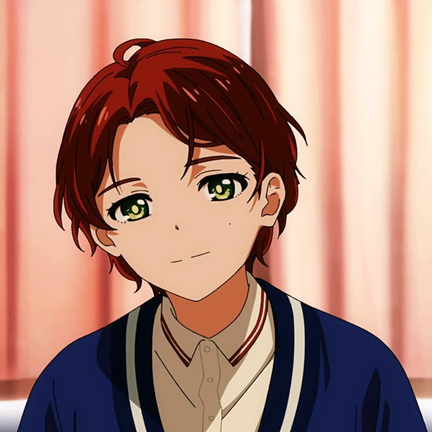
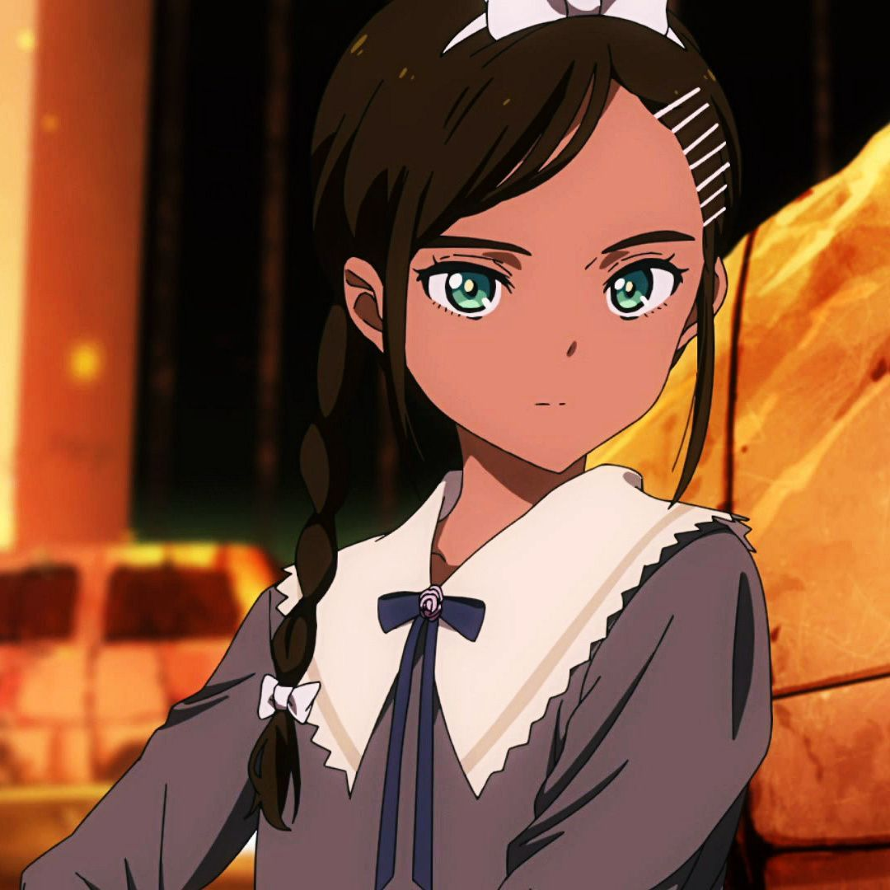

Ovo
Wonder Egg Priority
crianças, ovos magicos e suicidio.
Se você gosta de um anime bonito, triste profundo, "Wonder egg priority" é perfeito para você!
apresenta toda a estética cativante de um anime fofinho, mas ao decorrer da aventura, o que
parecia ser algo bonitinho e até magico, se torna aterrorizante e profundo.
Para algumas pessoas é considerado "pesado demais."

Mas afinal, sobre o que é o anime?
Wonder Egg Priority acompanha Ai Ohto, uma adolescente reclusa que recebe um misterioso
"Ovo Maravilha" em um passeio noturno e é guiada a um mundo de sonhos onde deve proteger
garotas que tiraram a propria vida, de monstros chamados "Seeno Evils", que são a manifestação
de traumas, medos e do sofrimento.
Para trazer sua amiga suicida de volta, ela deve salvar garotas o suficiente nos ovos, e dentro do
proprío objetivo, ela se encontra com outras meninas com seus próprios ovos entram em sua vida,
todas lidando com traumas, bullying e inseguranças. Assista aqui
O grupo
Que tal conhecer um pouco das protagonistas do anime?
- Ai Ohto
Ai Ohto (大戸 アイ, Ōto Ai) é a protagonista principal de Wonder Egg Priority .
Ela se descreve como uma reclusa que não vai à escola devido ao bullying severo
por causa de sua heterocromia e provavelmente outros motivos.

- Rika Kawai
Rika Kawai (川井 リカ, Kawai Rika ) é uma das personagens principais de Wonder Egg Priority.
Ela é uma garota que não hesita em dizer o que pensa, mesmo para pessoas que acabou de conhecer.

- Momoe Sawaki
Momoe Sawaki (沢木桃恵, Sawaki Momoe) é uma das personagens principais de Wonder Egg Priority.
Ela tem uma pinta bem distinta e um corpo esguio. É frequentemente confundida com um menino e
é popular entre as meninas. Momoe é sobrinha de Shuichiro Sawaki.

- Neiru Aonuma
Neiru Aonuma (青沼 ねいる, Aonuma Neiru) é um sa das personagens jdjd principais de Wonder Egg Priority.
Ela é uma garota reservada e quieta que não fala muito e não se envolve ativamente com outras pessoas.
